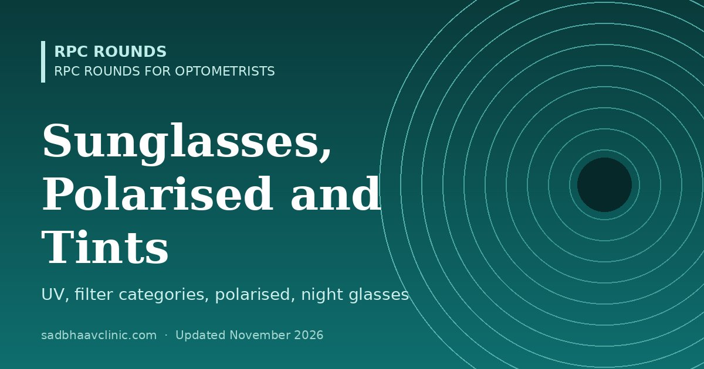

Last updated: November 2026
RPC Rounds for Optometrists · B.Optom study guide
Patients ask the optician which sunglasses to buy far more often than they ask the doctor. This page explains what sunglasses must do, the filter categories, tint colours, polarised and photochromic lenses, the truth about night-driving and blue-cut glasses, and which lens to recommend for each need.
| Category | Light let through | Use | Driving? |
|---|---|---|---|
| 0 | 80–100% | Clear or very light tint; indoors, cloudy days, fashion | Yes, day and night |
| 1 | 43–80% | Light tint; overcast days | Yes in daytime; not at night |
| 2 | 18–43% | Medium; ordinary sunshine | Yes in daytime |
| 3 | 8–18% | Dark; bright sun, beach, most sunglasses | Yes in daytime |
| 4 | 3–8% | Very dark; glaciers, high mountains, desert | No, never |
Lenses for driving at dusk or at night must let through at least 75% of light. In practice that means a clear lens with an anti-reflection coating.
| Colour | Effect | Good for | Avoid for |
|---|---|---|---|
| Grey | Reduces brightness evenly; true colours | General use, driving, bright sun | — |
| Brown, amber, copper | Blocks some blue light; increases contrast | Driving, golf, cricket, fishing, hazy days | Work needing exact colour judgement |
| Green (G-15 type) | Near-natural colours with good contrast | General use, outdoor sports | — |
| Yellow or orange | Brightens and sharpens contrast in dull light | Shooting, cycling in haze, indoor sports | Bright sun; night driving |
| Rose or red | Raises contrast against green and blue backgrounds | Skiing in flat light, some sports | Driving (alters traffic-light colours) |
| Blue or violet | Mostly cosmetic | Fashion | Driving |
| Gradient (dark top, light bottom) | Shades the sky while keeping the dashboard and reading clear | Driving, fashion, progressive sunglasses | — |
| Mirror coating | Reflects extra light; hides the eyes | Water, snow, high glare | —; add a back-surface AR coating to stop reflections from behind |
Some tints are medical: rose (FL-41-type) tints can help migraine and light sensitivity, and amber-red cut-off filters help some patients with retinitis pigmentosa, albinism, aniridia or cone dystrophy. Refer these patients for assessment rather than choosing for them.
Light reflected from flat, horizontal surfaces such as water, wet roads and car bonnets is partly polarised horizontally. A polarised lens has a filter with a vertical transmission axis that blocks this horizontally polarised glare.
| Advantages | Limitations |
|---|---|
| Cuts reflected glare from water, roads and snow | Phone, car dashboard, ATM and some instrument screens may look dark at certain angles |
| More comfortable, clearer view when driving and boating | Can make icy patches and some reflections that warn of hazards harder to see |
| Fishermen can see into the water | Stress patterns may appear in toughened car windows |
| Available in prescription single vision and progressive | Pilots are usually advised not to use them (cockpit displays, reduced view of reflections from other aircraft) |
Remember: polarisation is about glare, not UV. A polarised lens still needs a UV400 filter, though almost all good ones have it. Quick test at the counter: hold two polarised lenses in front of each other and rotate one by 90°; the view should go dark. Or look at a phone screen and tilt your head.
Yellow "night-driving" glasses are widely sold but do not help. Any tint reduces the light reaching the eye at night. In a driving-simulator study, yellow lenses did not improve pedestrian detection and did not reduce the effect of headlight glare.
What does help a patient who struggles to drive at night:
A Cochrane review found that blue-light filtering spectacle lenses probably make no difference to eye strain from screens in the short term, and that there is no good evidence that they protect the macula. Offer them as a choice if a patient wants them, without claiming medical benefits. For screen strain, check the refraction, binocular vision and dry eye, and advise regular breaks. "Blue cut" and "blue block" are trade names, not technical terms, and shops use them for the same thing. What differs is how the lens filters blue light: a reflective coating (the lens looks clear but shows a blue or violet reflection), a blue-absorbing lens material (a faint yellow tint, less reflection), or amber or orange "blue-blocker" glasses that remove most blue light and change colours, sold for evening use and sleep. Ask the supplier how much light is blocked between about 400 and 455 nm instead of relying on the name.
| Need | Recommendation |
|---|---|
| Daytime driving | Grey or brown, category 2–3, polarised; check that the dashboard screen is readable |
| Driving at night | Clear lens with AR coating; no tint, no yellow glasses |
| Beach, boating, fishing | Polarised, category 3; amber or copper for fishing |
| Snow, high mountains | Category 4 wraparound with side protection (not for driving); category 3 for normal skiing |
| Cricket, tennis, golf, cycling | Polycarbonate or Trivex, wrap frame, amber or brown for contrast |
| Children | UV400, polycarbonate, category 2–3, a flexible frame or strap |
| After cataract surgery, dilated pupils, light sensitivity | UV400 wraparound, category 2–3 |
| Office and computer | Clear lens with AR coating; tints and blue-cut are optional |
| Pilots | Non-polarised, grey, category 2–3 |
| Albinism, aniridia, retinitis pigmentosa | Refer for filter assessment; wraparound frames with side shields |
| Migraine and photophobia | Discuss rose (FL-41-type) tints after an eye examination |
Before you send the order
Practical pearls
Where students slip
Related: Spectacle Lens Types Compared: Single Vision, Bifocal, Trifocal, Progressive and Office Lenses, With an Order Checklist, Spectacle Lens Materials and Coatings: CR-39, Polycarbonate, Trivex, High Index, Abbe Value and Blue-Cut, Occupational and Sports Optometry: Visual Standards, Protective Eyewear and Screen Use, Eyesight Rules for a Driving Licence in India: Glasses, Colour Vision and One Eye, Eyeglass Lens Coatings Guide Ahmedabad. Back to the optometry curriculum.
📘 Want more exam-ready material? See Most Commons in Ophthalmology on Kindle, or browse all my books.
Looking for an eye specialist in Ahmedabad? Eye Department at Sadbhaav or book a consultation with Dr. Dhaval Patel.